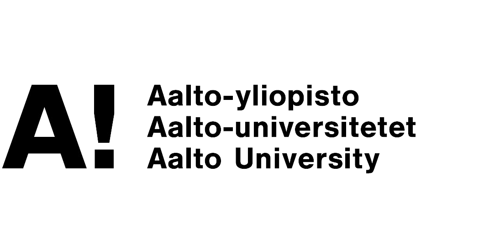

| Updated: 06/02/2024 | |||

|
Bernard SpieglResearcherAalto University |
||
Contactbernard-spiegl  |
|||
| I hold a MSc in Signal Processing and Data Science (with minors in Human Neuroscience and Technology and Acoustics and Audio Technology) from Aalto University where I was under joint supervision of Prof. Alexander Ilin and Prof. Stéphane Deny, and a BSc in Computer Science obtained at the Faculty of Electrical Engineering and Computing, University of Zagreb under supervision of Prof. Siniša Šegvić . | |||
Research |
|||
|
ViewFusion: Learning Composable Diffusion Models for Novel View
Synthesis Bernard Spiegl, Andrea Perin, Stéphane Deny, Alexander Ilin [PDF] [code] Contrastive Unpaired Translation using Focal Loss for Patch Classification (Technical Report) Bernard Spiegl [PDF] |
|||